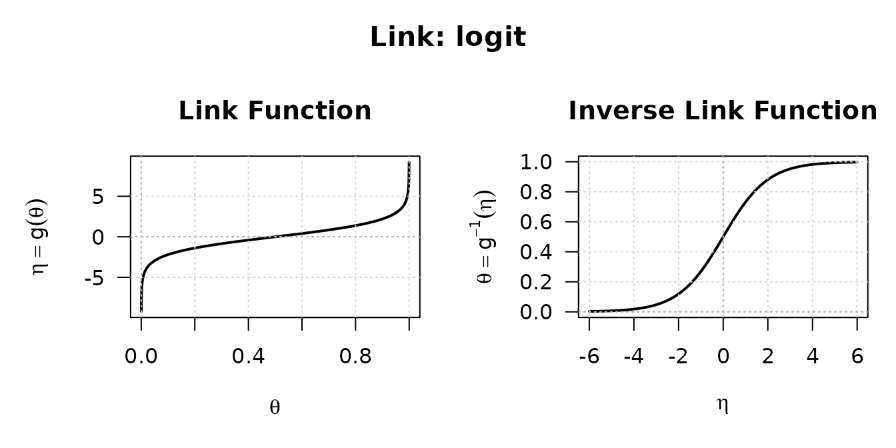
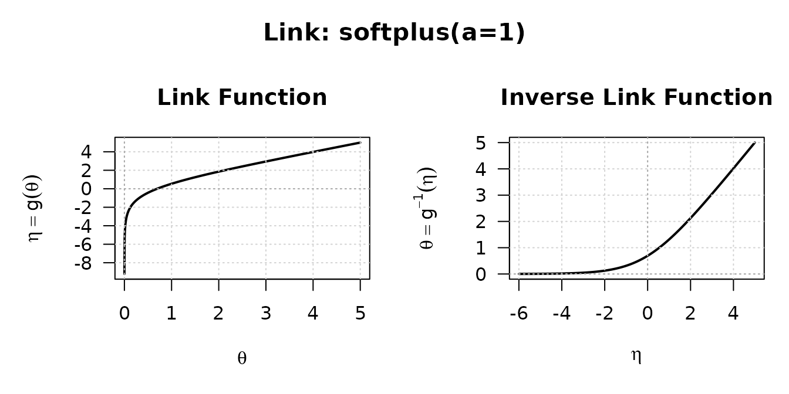

A link function maps a constrained parameter to an unconstrained linear predictor , so that a model can be fitted without fighting the parameter’s boundary. A variance must stay positive, a probability must stay in ; the log and logit links let you optimise over the whole real line and map back.
What sets linkfunctions7 apart from a couple of
log() and plogis() calls is that every link
carries its exact analytical derivatives up to fourth
order, in both directions — and a diagnostic that proves they
are right. That is what a modelling package needs: a Newton or
Fisher-scoring step wants the derivative of the inverse link, and a
higher-order correction wants the ones above it.
A link is an object
Each link is created by a constructor and prints its name, domain, and any parameters:
log_link()
#> S7 Link Object: log
#> - Parameter domain (theta): (0, Inf)
logit_link()
#> S7 Link Object: logit
#> - Parameter domain (theta): (0, 1)The two directions and their derivatives are generics that dispatch on the link:
lk <- log_link()
theta <- c(0.5, 1, 2)
linkfun(lk, theta) # eta = g(theta) = log(theta)
#> [1] -0.6931472 0.0000000 0.6931472
linkinv(lk, linkfun(lk, theta)) # back to theta
#> [1] 0.5 1.0 2.0The forward derivatives are taken with respect to , the inverse ones with respect to :
eta <- linkfun(lk, theta)
dlinkfun(lk, theta) # g'(theta)
#> [1] 2.0 1.0 0.5
dlinkinv(lk, eta) # (g^{-1})'(eta)
#> [1] 0.5 1.0 2.0They are exact, not finite differences. For the log link so , and indeed:
Every order, either direction
linkderiv() and linkinvderiv() reach any
order from zero to four without naming a separate function:
lk <- logit_link()
theta <- c(0.2, 0.5, 0.8)
eta <- linkfun(lk, theta)
sapply(0:4, function(k) linkinvderiv(lk, eta, order = k))
#> [,1] [,2] [,3] [,4] [,5]
#> [1,] 0.2 0.16 0.096 0.0064 -0.08832
#> [2,] 0.5 0.25 0.000 -0.1250 0.00000
#> [3,] 0.8 0.16 -0.096 0.0064 0.08832Order zero is the function itself; the columns are the successive derivatives of the inverse logit at those three points.
Seeing a link
Every link has a plot() method that draws the forward
and inverse transformations over sensible ranges:
plot(logit_link())
The softplus link is a good one to look at. Like the log it keeps positive, but instead of the log’s global exponential it bends smoothly into a straight line for large , which makes it better behaved when the linear predictor wanders:
plot(softplus_link(a = 1))
Bounded parameters
bounded_link() maps an interval to the whole real line.
Give it a lower bound, an upper bound, or both:
lk <- bounded_link(lwr = -3, upr = 2)
eta <- seq(-3, 3, length.out = 5)
theta <- linkinv(lk, eta)
theta
#> [1] -2.762871 -2.087872 -0.500000 1.087872 1.762871theta stays inside
whatever
is, and the derivatives are available here too:
The links on offer
| Constructor | Domain |
|---|---|
identity_link() |
|
log_link() |
|
logit_link() |
|
probit_link() |
|
cloglog_link() |
|
loglog_link() |
|
cauchit_link() |
|
rhobit_link() |
|
sqrt_link() |
|
inverse_link() |
|
inverse_sq_link() |
|
power_link(lambda) |
|
softplus_link(a) |
|
bounded_link(lwr, upr) |
Trust, but verify
Because the derivatives are hand-written, the package ships a
diagnostic that checks them. check_link() confirms that the
link inverts cleanly, that it is strictly monotone, that the inverse
function theorem
holds, and that every analytical derivative matches a numerical one:
invisible(check_link(logit_link()))
#> Checking S7 Link Object: logit
#> [1] Invertibility (Theta space): [PASSED]
#> [2] Invertibility (Eta space): [PASSED]
#> [3] Strict Monotonicity: [PASSED]
#> [4] Inverse Function Theorem: [PASSED]
#> [5] Link Derivatives: [PASSED]
#> [6] Inverse Link Derivatives: [PASSED]Run it on any link before you rely on it — and certainly on any link you write yourself.
Defining your own link
A new link is a subclass of link with its ten methods:
the two directions and their four derivatives each. The pattern is
short; here is a complete one for the negative log-log
link,
on
.
NegLogLog <- S7::new_class("NegLogLog", parent = link)
S7::method(linkfun, NegLogLog) <- function(x, theta) -log(-log(theta))
S7::method(linkinv, NegLogLog) <- function(x, eta) exp(-exp(-eta))
S7::method(dlinkfun, NegLogLog) <- function(x, theta) -1 / (theta * log(theta))
S7::method(d2linkfun, NegLogLog) <- function(x, theta) (1 + log(theta)) / (theta * log(theta))^2
S7::method(d3linkfun, NegLogLog) <- function(x, theta) {
l <- log(theta)
-(2 * l^2 + 3 * l + 2) / (theta * l)^3
}
S7::method(d4linkfun, NegLogLog) <- function(x, theta) {
l <- log(theta)
(6 * l^3 + 11 * l^2 + 12 * l + 6) / (theta * l)^4
}
S7::method(dlinkinv, NegLogLog) <- function(x, eta) exp(-eta - exp(-eta))
S7::method(d2linkinv, NegLogLog) <- function(x, eta) exp(-eta - exp(-eta)) * (exp(-eta) - 1)
S7::method(d3linkinv, NegLogLog) <- function(x, eta) {
e <- exp(-eta)
exp(-eta - e) * (e^2 - 3 * e + 1)
}
S7::method(d4linkinv, NegLogLog) <- function(x, eta) {
e <- exp(-eta)
exp(-eta - e) * (e^3 - 6 * e^2 + 7 * e - 1)
}
neglog <- NegLogLog(link_name = "neglog-log", link_bounds = c(0, 1), link_params = NULL)Did the derivatives come out right? Ask the diagnostic rather than trusting the algebra:
invisible(check_link(neglog))
#> Checking S7 Link Object: neglog-log
#> [1] Invertibility (Theta space): [PASSED]
#> [2] Invertibility (Eta space): [PASSED]
#> [3] Strict Monotonicity: [PASSED]
#> [4] Inverse Function Theorem: [PASSED]
#> [5] Link Derivatives: [PASSED]
#> [6] Inverse Link Derivatives: [PASSED]If any line came back [FAILED], that is a derivative to
revisit — which is exactly the mistake check_link() exists
to catch.
Where to go next
-
?check_link— the full diagnostic and what each check means. -
?linkinvderiv— reaching any derivative order. - The distributions7 package, where these links become the scale on which distributions are fitted.